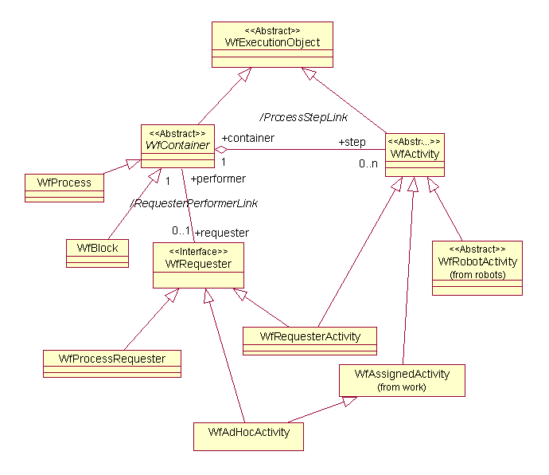

See: Description
| Interface | Description |
|---|---|
| WfEngineService |
This class
WfEngineService represents the client accessible
API to the workflow engine. |
| WfEngineServiceSvr |
The
WfEngineServiceSvr interface contains the server accessible
API. |
| Class | Description |
|---|---|
| _WfEmailAttachmentType | |
| _WfExecutionObject | |
| _WfProcess | |
| ProcessData |
The
ProcessData represents data used by execution objects. |
| SSOConfiguredSignatureEngine |
A signature engine which requires username and password to be supplied.
|
| StandardWfEngineService |
Standard implementation of the workflow engine service.
|
| WfAssigneeNotification |
This class is to be used for variable modification of the parameters
associated with overdue (eg.
|
| WfDueDate |
This class is to be used for variable modification of a process' or activity's
deadline Date.
|
| WfDuration |
This class is to be used for variable modification of a process' or activity's
deadline duration..
|
| WfEmailAttachments |
Object to hold list of Process variables that will be delivered on external
email notification.
|
| WfEmailAttachmentType |
Supported API: true Extendable: false |
| WfEngineHelper |
Helper class that provides client access to the WfEngineService API.
|
| WfExecutionObject |
WfExecutionObject is an abstract base class that defines
common attributes, states and operations for processes and steps. |
| WfExternalRecipientList |
Supported API: true Extendable: false |
| WfProcess |
A
WfProcess is the performer of a workflow. |
This package contains the classes responsible for the workflow enactment. Workflows are represented by processes (WfProcess objects) or blocks (WfBlock objects) that are composed of activities (WfActivity objects or WfAdhocActivity objects). Each activity may be performed by humans (WfAssignedActivity and WfAdhocActivity), or by applications (represented by a WfRobotActivity object). Finally, an activity may also be a reference (represented by a WfRequesterActivity object).
Both WfProcess and WfActivity classes extend the WfExecutionObject. WfExecutionObject is responsible mainly for object identification, state maintenance (allowing only valid transitions), and information holding.

Workflow Engine
Package Diagram